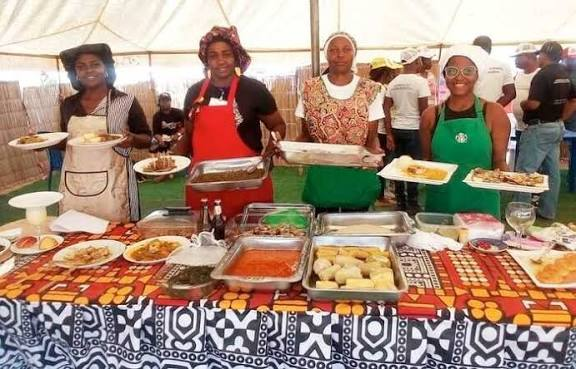
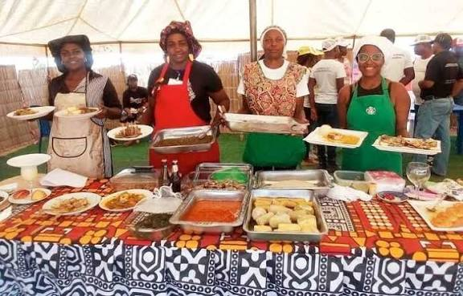
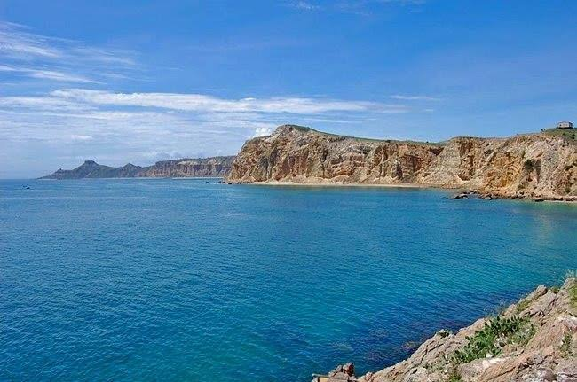
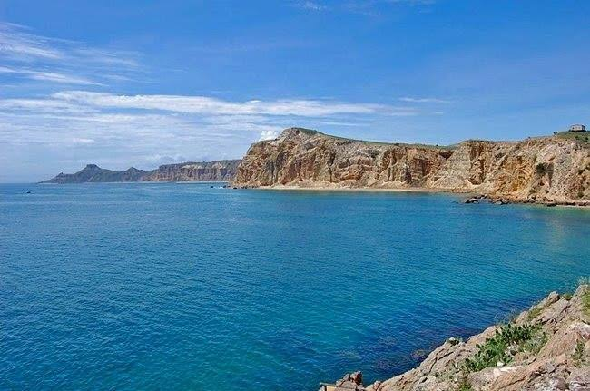

Conhecimento da Província de Benguela
Conhecimento da Província de Benguela
Governador

O governador atual da província de Benguela é responsável pela administração local...
Cultura


A cultura de Benguela inclui danças, música, festas e tradições locais...
Gastronomia
 

Os pratos típicos incluem funge, calulu, muamba e peixes diversos...
Vestimenta

As vestimentas tradicionais são coloridas e usadas em danças e festivais...
Paisagens
 

Religião


Localização Geográfica

Benguela situa-se na região oeste de Angola, ao longo do Oceano Atlântico...
Fotos da Bancada de Benguela
7ª Classe
(Adicionar fotos)
8ª Classe
(Adicionar fotos)
9ª Classe
(Adicionar fotos)